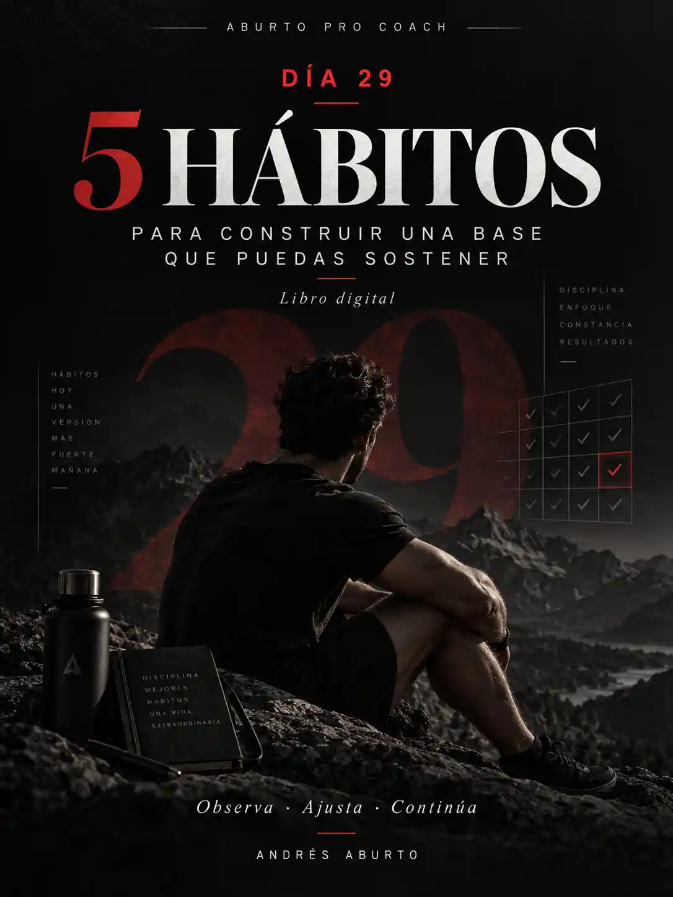

EL DÍA29.LO QUE HACESDESPUÉS.
El problema no es llegar al día 28. El reto real es construir decisiones que puedas seguir tomando cuando cambia la motivación, el horario o la vida.

NO NECESITAS HACERLO PERFECTO.
NECESITAS APRENDER A CONTINUAR.
Entender por qué tomas ciertas decisiones y reconocer qué conductas te acercan o te alejan de tu objetivo.
Construir hábitos que se adapten a tu realidad, no una estructura perfecta que se rompe cuando la vida cambia.
Ajustar después de un mal día y retomar sin destruir todo lo que ya habías construido.
La segunda pregunta es: “¿Puedo sostenerlo?”. El Día 29 no promete una transformación mágica. Te enseña a observar, evaluar y ajustar para seguir construyendo cuando la motivación deja de hacer el trabajo por ti.
TRES HERRAMIENTAS.
UN STARTER PACK.
Compra los tres libros juntos. Apertura Founding 100: $960.40 MXN (30% de descuento), durante la ventana de lanzamiento o hasta completar 100 miembros. Después, $1,050 MXN.
Conocer el Starter Pack ↗